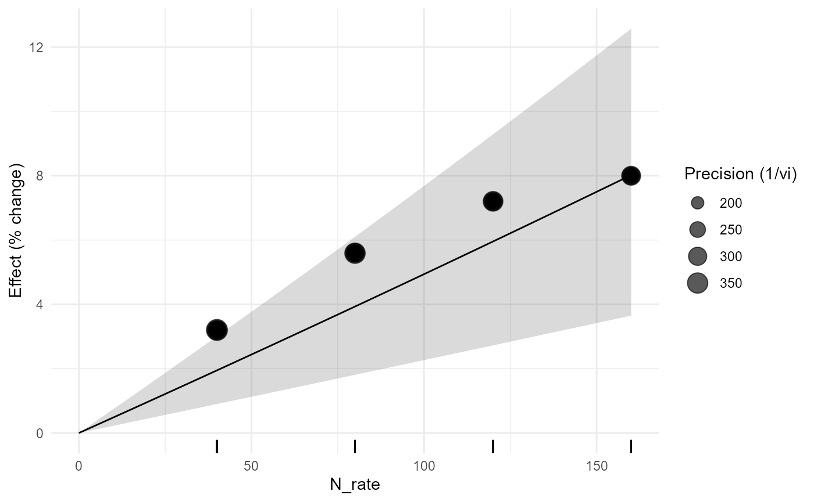
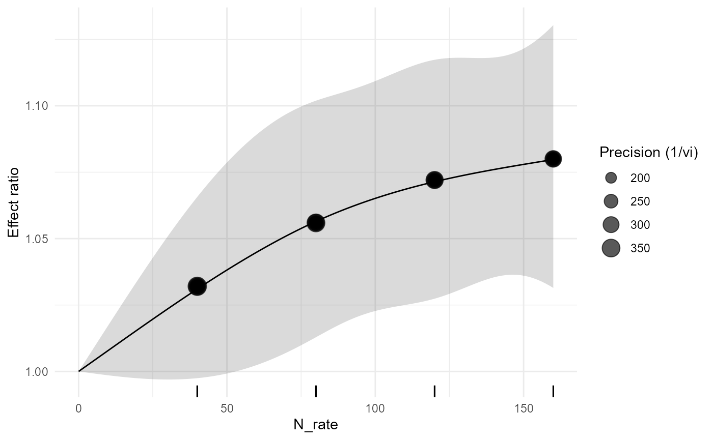
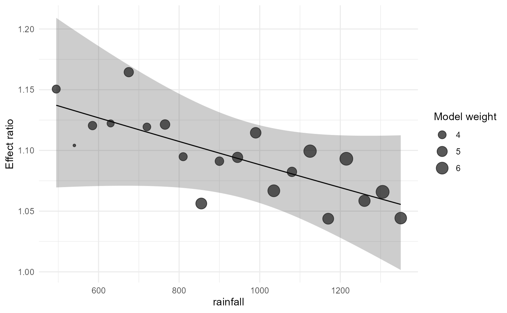
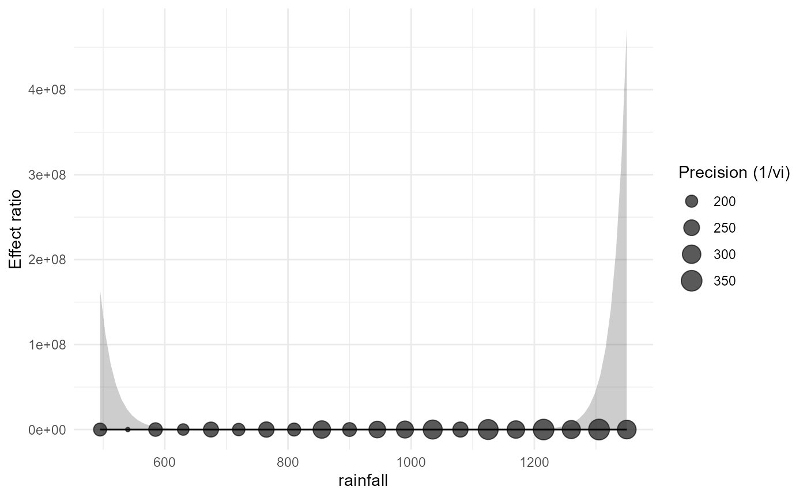
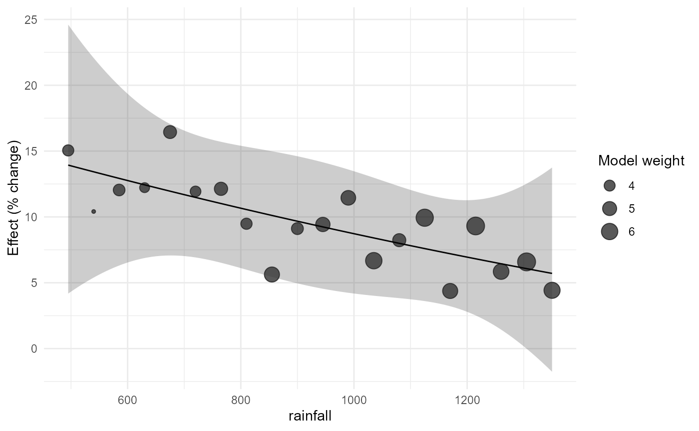

Version 0.3.0 API Example Reference
Source:vignettes/v07-api-example-reference-0.3.Rmd
v07-api-example-reference-0.3.RmdMeta-regression
m1 <- apm_metareg(irr,~rainfall)
m2 <- apm_metareg(irr,~rainfall+mean_temp)
m3 <- apm_metareg(bio,~crop+site)Marginal effects
apm_marginal_effects(m1,at=list(rainfall=c(650,900,1200)))
#> <apm_marginal> weights=equal | transform=auto
#> rainfall pred se ci_lower ci_upper pi_lower pi_upper
#> 650 1.121939 0.02215326 1.070918 1.175391 1.070918 1.175391
#> 900 1.097762 0.01435876 1.065141 1.131382 1.065141 1.131382
#> 1200 1.069436 0.01876787 1.028089 1.112446 1.028089 1.112446
apm_marginal_effects(m2,at=list(rainfall=c(700,1000)))
#> <apm_marginal> weights=equal | transform=auto
#> rainfall pred se ci_lower ci_upper pi_lower pi_upper
#> 700 0.8324787 4.774116 3.515123e-05 19715.40485 3.515123e-05 19715.40485
#> 1000 1.2056188 1.663132 3.608390e-02 40.28159 3.608390e-02 40.28159
apm_marginal_effects(m3,variables="crop",transform="percent")
#> <apm_marginal> weights=equal | transform=percent
#> crop pred se ci_lower ci_upper pi_lower pi_upper
#> common_bean 6.523174 0.04309177 -2.6969728 16.61699 -2.6969728 16.61699
#> maize 8.323358 0.01875818 4.1374156 12.67756 4.1374156 12.67756
#> soybean 6.499606 0.03227482 -0.4824101 13.97147 -0.4824101 13.97147
#> wheat 4.453785 0.03682445 -3.3226227 12.85570 -3.3226227 12.85570Interactions
i1 <- apm_metareg(irr,~rainfall*climate_zone)
i2 <- apm_metareg(bio,~crop*site)
apm_interaction(i1,"rainfall:climate_zone")
#> <apm_interaction> rainfall:climate_zone | contrast=difference
#> label context estimate
#> slope_rainfall | climate_zone=humid rainfall=922.5 -1.288665e-04
#> slope_rainfall | climate_zone=semiarid rainfall=922.5 1.238407e-05
#> slope_rainfall | climate_zone=transition rainfall=922.5 -6.213622e-05
#> se ci_lower ci_upper statistic df distribution p_value
#> 0.0002451578 -0.0006546776 0.0003969446 -0.52564722 14 t 0.6073594
#> 0.0003714827 -0.0007843670 0.0008091352 0.03333688 14 t 0.9738766
#> 0.0002574490 -0.0006143095 0.0004900370 -0.24135349 14 t 0.8127802
#> p_adjusted
#> 0.6073594
#> 0.9738766
#> 0.8127802
#> Joint interaction test:
#> statistic df1 df2 distribution p_value
#> 0.05299287 2 14 F 0.9485761
apm_interaction(i1,"rainfall:climate_zone",contrast="ratio")
#> <apm_interaction> rainfall:climate_zone | contrast=ratio
#> label context estimate se
#> slope_rainfall | climate_zone=humid rainfall=922.5 0.9998711 0.0002451578
#> slope_rainfall | climate_zone=semiarid rainfall=922.5 1.0000124 0.0003714827
#> slope_rainfall | climate_zone=transition rainfall=922.5 0.9999379 0.0002574490
#> ci_lower ci_upper statistic df distribution p_value p_adjusted
#> 0.9993455 1.000397 -0.52564722 14 t 0.6073594 0.6073594
#> 0.9992159 1.000809 0.03333688 14 t 0.9738766 0.9738766
#> 0.9993859 1.000490 -0.24135349 14 t 0.8127802 0.8127802
#> Joint interaction test:
#> statistic df1 df2 distribution p_value
#> 0.05299287 2 14 F 0.9485761
apm_interaction(i2,"crop:site",adjust="holm")
#> <apm_interaction> crop:site | contrast=difference
#> label context estimate se ci_lower
#> crop=maize vs common_bean site=Areia 0.029670609 0.08659668 -0.1590073
#> crop=soybean vs common_bean site=Areia 0.004038997 0.09985842 -0.2135338
#> crop=wheat vs common_bean site=Areia -0.005580770 0.10570655 -0.2358955
#> crop=maize vs common_bean site=Bananeiras 0.010686439 0.08044875 -0.1645963
#> crop=soybean vs common_bean site=Bananeiras 0.005674865 0.09288805 -0.1967108
#> crop=wheat vs common_bean site=Bananeiras -0.030327378 0.09672300 -0.2410687
#> crop=maize vs common_bean site=Lagoa Seca 0.012011577 0.07773183 -0.1573515
#> crop=soybean vs common_bean site=Lagoa Seca -0.008615017 0.08797695 -0.2003003
#> crop=wheat vs common_bean site=Lagoa Seca -0.020755157 0.09315974 -0.2237328
#> ci_upper statistic df distribution p_value p_adjusted
#> 0.2183486 0.34262986 12 t 0.7378038 1
#> 0.2216118 0.04044723 12 t 0.9684017 1
#> 0.2247340 -0.05279493 12 t 0.9587640 1
#> 0.1859692 0.13283538 12 t 0.8965251 1
#> 0.2080605 0.06109360 12 t 0.9522904 1
#> 0.1804139 -0.31354876 12 t 0.7592470 1
#> 0.1813747 0.15452585 12 t 0.8797637 1
#> 0.1830703 -0.09792358 12 t 0.9236096 1
#> 0.1822225 -0.22279106 12 t 0.8274452 1
#> Joint interaction test:
#> statistic df1 df2 distribution p_value
#> 0.01625734 6 12 F 0.9999715Quantitative curves
c1 <- apm_metareg_curve(irr,rainfall,"linear")
c2 <- apm_metareg_curve(irr,rainfall,"quadratic")
c3 <- apm_metareg_curve(irr,rainfall,"ns",df=3)Model comparison
apm_model_compare(m1,m2,criterion="AICc")
#> <apm_model_comparison> criterion=AICc
#> model k p logLik AIC AICc BIC delta weight
#> model1 20 3 36.04221 -66.08443 -64.58443 -63.09723 0.000000 0.8294079
#> model2 20 4 36.04411 -64.08822 -61.42156 -60.10529 3.162873 0.1705921
apm_model_compare(m1,m2,criterion="AIC")
#> <apm_model_comparison> criterion=AIC
#> model k p logLik AIC AICc BIC delta weight
#> model1 20 3 36.04221 -66.08443 -64.58443 -63.09723 0.000000 0.7306855
#> model2 20 4 36.04411 -64.08822 -61.42156 -60.10529 1.996206 0.2693145
apm_model_compare(m1,m2,criterion="BIC")
#> <apm_model_comparison> criterion=BIC
#> model k p logLik AIC AICc BIC delta weight
#> model1 20 3 36.04221 -66.08443 -64.58443 -63.09723 0.000000 0.8169725
#> model2 20 4 36.04411 -64.08822 -61.42156 -60.10529 2.991939 0.1830275Context prediction
apm_predict_context(m1,data.frame(rainfall=700))
#> <apm_prediction> transform=auto
#> rainfall support pred se ci_lower ci_upper pi_lower pi_upper
#> 700 interpolation 1.117061 0.02010718 1.070855 1.165261 1.070855 1.165261
#> threshold_relation probability_above_threshold probability_basis
#> <NA> NA not requested
apm_predict_context(m2,data.frame(rainfall=900,mean_temp=25),transform="percent")
#> <apm_prediction> transform=percent
#> rainfall mean_temp support pred se ci_lower ci_upper
#> 900 25 interpolation 10.50814 0.1088469 -12.16656 39.03644
#> pi_lower pi_upper threshold_relation probability_above_threshold
#> -12.16656 39.03644 <NA> NA
#> probability_basis
#> not requested
apm_predict_context(c2,data.frame(rainfall=c(700,1000)),threshold=5,transform="percent")
#> <apm_prediction> transform=percent
#> rainfall support pred se ci_lower ci_upper pi_lower
#> 700 interpolation 11.691871 0.02021389 7.028627 16.55829 7.028627
#> 1000 interpolation 8.726033 0.02023404 4.182187 13.46806 4.182187
#> pi_upper threshold_relation probability_above_threshold
#> 16.55829 above 0.9988803
#> 13.46806 overlaps 0.9575900
#> probability_basis
#> normal approximation on the prediction distribution
#> normal approximation on the prediction distributionCurve features
apm_curve_features(c2,"slope")
#> <apm_curve_features>
#> Slope grid: 200 locations
#> Moderator-curve features are descriptive across-study associations and are not automatically causal dose recommendations.
apm_curve_features(c2,c("slope","turning_point"))
#> <apm_curve_features>
#> Turning points:
#> [1] location lower upper inside_support
#> [5] interval_method
#> <0 rows> (or 0-length row.names)
#> Slope grid: 200 locations
#> Moderator-curve features are descriptive across-study associations and are not automatically causal dose recommendations.
apm_curve_features(c3,"threshold_crossing",threshold=log(1.05))
#> <apm_curve_features>
#> Threshold crossings:
#> [1] location lower upper threshold
#> [5] inside_support interval_method
#> <0 rows> (or 0-length row.names)
#> Moderator-curve features are descriptive across-study associations and are not automatically causal dose recommendations.Dose-response
d1 <- apm_dose_response(fertilizer_dose_response,effect=lnRR,dose=N_rate,study=study_id,form="linear",method="fixed")
d2 <- apm_dose_response(fertilizer_dose_response,effect=lnRR,dose=N_rate,study=study_id,form="quadratic",method="fixed")
d3 <- apm_dose_response(fertilizer_dose_response,effect=lnRR,dose=N_rate,study=study_id,form="ns",df=3,method="fixed")Dose plots
apm_dose_plot(d1,transform="percent")
apm_dose_plot(d2,prediction=TRUE)
apm_dose_plot(d3,rug=TRUE)
Bubble plots
apm_bubble(m1,rainfall)
apm_bubble(m2,rainfall,size="precision")
apm_bubble(c2,rainfall,transform="percent")